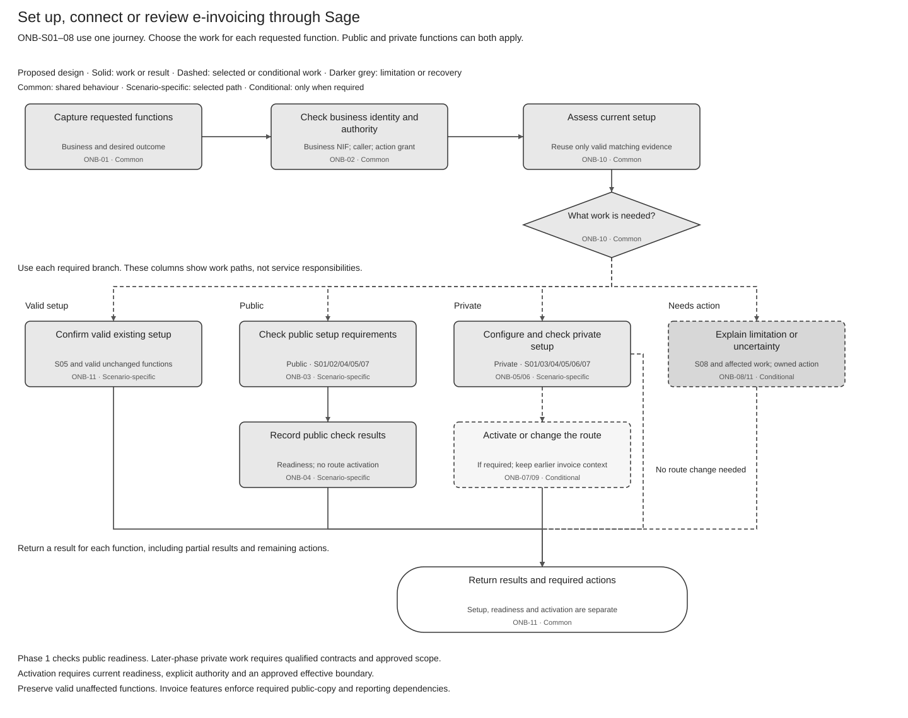
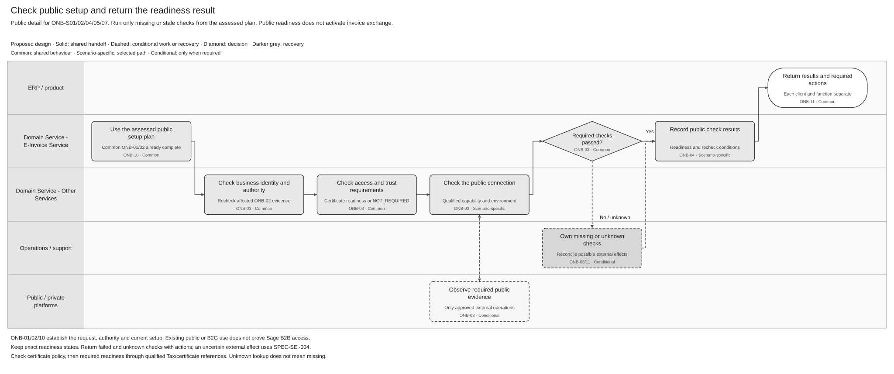
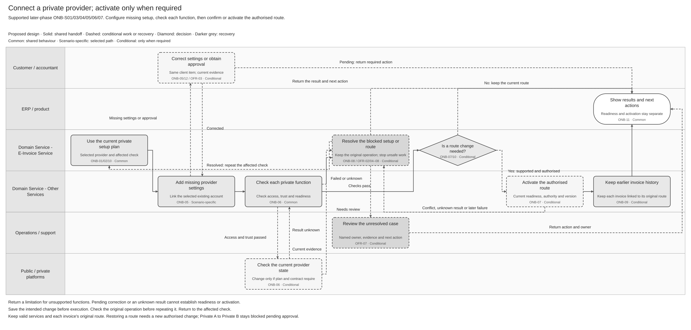
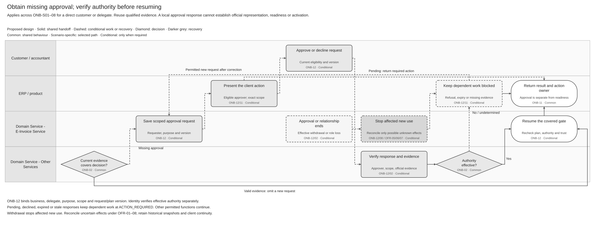
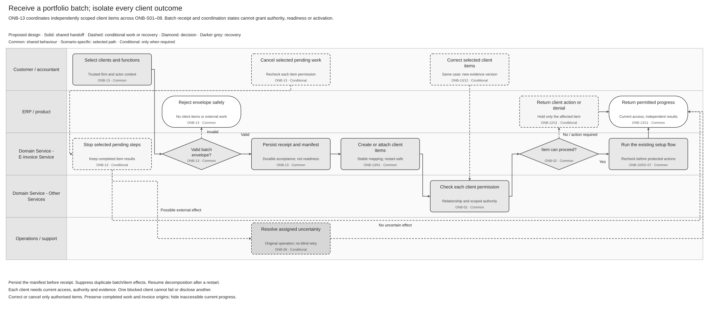
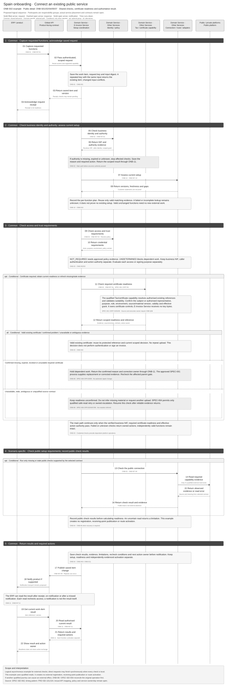
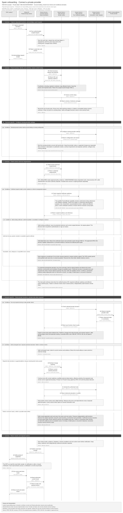

Onboarding overview
Record the request, verify authority and assess current setup (ONB-01/02/10). Follow the public or private path for each selected function. Return results and required actions through ONB-11; recovery returns to the affected check.

Public setup checks — detail
Check identity, authority, required credentials and the public connection for each selected function (ONB-02–04). Correct or recover failed checks at the affected step. Return readiness and required actions through ONB-11. Public readiness does not activate invoice exchange.

Open full-size SVG · Editable Draw.io · PNG.
Private connection and activation — detail
Connect the selected provider and check each function (ONB-05/06). Activate a route only when the plan requires an authorised change (ONB-07). Return failed or unknown work to its affected check. Preserve earlier invoice context and return separate function results (ONB-09/11).

Open full-size SVG · Editable Draw.io · PNG.
Client approval and evidence — conditional detail
Reuse current evidence or request a missing decision from an eligible approver (ONB-12). Verify the response and required official evidence before resuming covered work. Refusal, expiry or withdrawal keeps dependent work blocked; reconcile any unknown submitted operation.

Accountant portfolio — process clients separately
Save a batch receipt, then check and process each client independently (ONB-13). Receipt does not prove readiness. Correct or cancel selected items while other safe items continue; an unresolved external effect prevents final cancellation.

Public setup — sequence
This ONB-S02 example uses a saved asynchronous request; local checks can finish synchronously. ONB-03/04 perform qualified reads and save readiness without registration, receiving-point publication or route activation. ONB-11 notifies the product; after a lost notification, read the current authorised result.

Private setup and activation — sequence
This ONB-S03 example adds only missing configuration. ONB-06 checks each function and required provider state; save intent before any separately approved external change. ONB-07/08 confirm an unchanged route, activate an authorised change or return blocked work to its exact check. ONB-11 returns results; runtime owners retain authentication, signing and validity checks.
